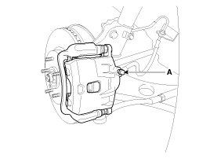
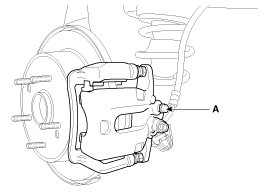
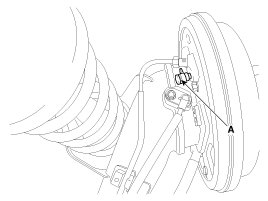
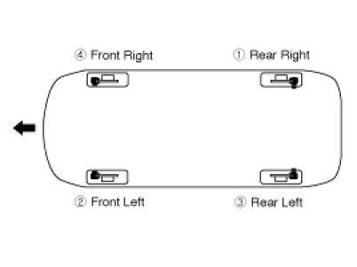

Brake Bleeding: Service and Repair
Brake System Bleeding
CAUTION:
- Do not reuse the drained fluid.
- Always use genuine DOT3/DOT4 brake Fluid.
Using a non-genuine DOT3/DOT4 brake fluid can cause corrosion and decrease the life of the system.
- Make sure no dirt or other foreign matter is allowed to contaminate the brake fluid.
- Do not spill brake fluid on the vehicle, it may damage the paint; if brake fluid does contact the paint, wash it off immediately with water.
- The reservoir on the master cylinder must be at the MAX (upper) level mark at the start of bleeding procedure and checked after bleeding each brake caliper. Add fluid as required.
1. Make sure the brake fluid in the reservoir is at the MAX(upper) level line.
2. Have someone slowly pump the brake pedal several times, and then apply pressure.
3. Loosen the right-rear brake bleed screw (A) to allow air to escape from the system. Then tighten the bleed screw securely.
Front

Rear Disc Brake

Rear Drum Brake

4. Repeat the procedure for wheel in the sequence shown below until air bubbles no longer appear in the fluid.

5. Refill the master cylinder reservoir to MAX(upper) level line.